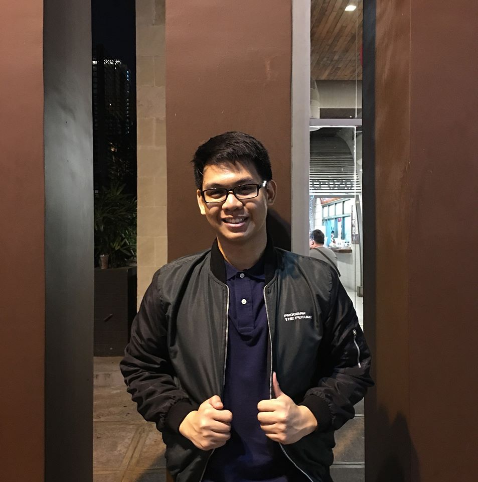
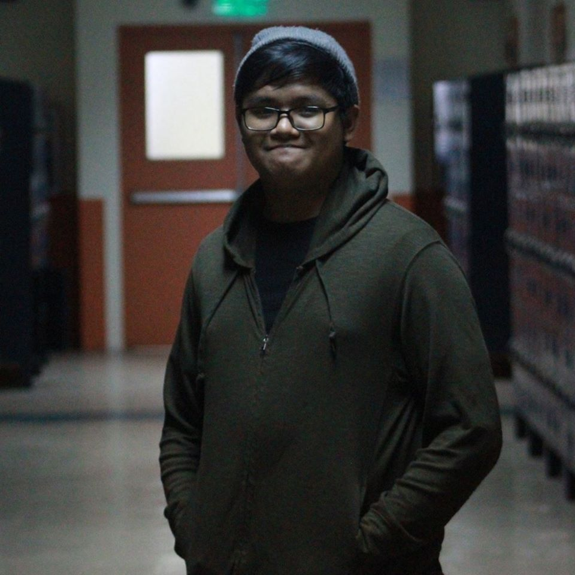
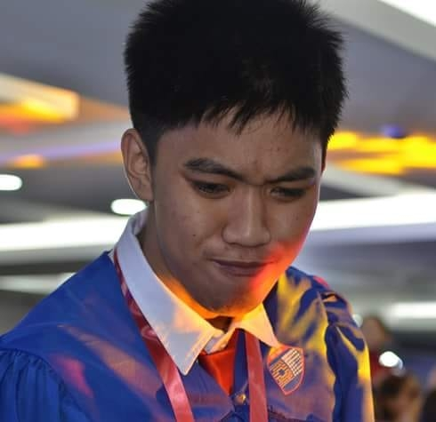

About Us
Andre Lagsac - Main Developer
I am Andre Lagsac, and I am 21 years old. I was born in Quezon City but currently, I live in Barangay Tejeros in Makati City. I really love playing computer games and watching youtube videos during my past time. I love playing Mobile Legends or any other racing games. Though I am a techy guy, I love playing sport, I am into basketball and biking. This also serves a past time during my weekends. I am currently a member of the Elite Group of Innovators (EGI), which competes in different industry challenges. I didn't have the chance to enjoy my summer since we are currently doing a project in Accenture in the Program the Future competition. Even though there are no classes in school, I still go to school because we need to finish our project and it is very exhausting. Although the experience of being selected by Accenture was delighting, however the process of making a project is very hard. Accenture assigned two mentors for our group. And every week we need to meet them according to our preference. It is the last week of the making project in Accenture so we need to go on full force. Now it is the first day of school, and I really don't feel any excitement since I have been in school almost every day for the past month. Since before, I always feel excited on first day of class, but right now I just want to sleep. I am a very shy person, so I really don’t like interacting with people, especially to people I just recently met. I am the kind of person that likes to be approached first rather than being the one to approach that person. However, whenever I’m with my friends I already know I usually don’t get shy and I’m one of the noisiest persons you will ever know or see. But even though I am a two-sided person, I always remind them to do their best all the time and give them tips on how to study, since I am aiming for honors when I graduate in college. Overall, even though I am a reserved person, I have a clean and good heart and I am very approachable 24/7, I am not that stubborn as to compare to what I look like. I always love to smile and give smile to others. I may not be a perfect student or a classmate, but I can treat others with my upmost respect even though I may not be given one.
Adrian Fortuno - Researcher
Just call me Aids, I've had that nickname for years and its stuck ever since. I am an ambivert but i lean more to the introverted side but i become more extroverted when i spend time with close friends. My music tastes are different than others because i dont listen to mainstream music, I like to listen alternate rock and pop especially Nightcore versions of songs since i like it when the songs are more fast paced. I have a hard time expressing my feelings most of the time and I put on a mask of either excitedness or indifference to most people. I used to be more emotional but after some experiences with bullying in my old school I started to bottle up my emotions and created a no care attitude towards others. My summer was mostly me at home playing Borderlands 2 or Mortal Kombat 11 on my PS4 but in the 2nd to the last week of vacation my parents and I went to Cebu for a family trip. It was really fun since we were able to swim with the whale sharks and swam under a waterfall, the waterfall was really fun but it was so cold. It was also the first time i went out of the luzon region My expectations to for this class would be to at least learn how most UI interfaces are designed and i guess how to manipulate it.
Erwin Garcia Jr. - Tech Support
My name is Erwin Garcia Jr. and I am a 20 year old boy studying in Asia Pacific College, Makati City. I was born at Tondo, Manila but I currently live at Caloocan City. In my spare time you can find me playing video games, reading books, watching movies, anime or simply just lazing around, usually sleeping. I usually play Action-RPG games and Shooters, but I am open to any kind of games as long as I find them enjoyable. I mainly play on the Computer and spend most of my time in front of it. An ideal afternoon would be coffee, computer and some tunes to listen to as time passes by.Though my technological knowledge is shallow I have decided to take a degree related to the IT industry to further my knowledge. I am currently taking a degree in Computer Science at Asia Pacific College with a specialization in Digital Security and Forensics. Growing up with computers, fun and games come to an end as adults, we have to focus on the practical aspects of life. Though my hobbies and things I wanna do remain, I must step up my game and start contributing to society.